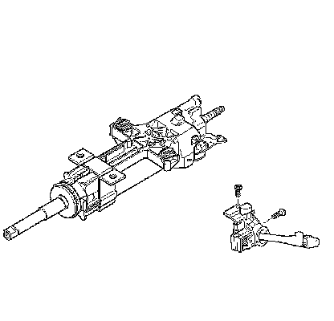

Turn Signal Switch: Service and Repair
Turn Signal Multifunction Switch Replacement
Removal Procedure
1. Remove the steering column trim covers. Refer to Steering Column Trim Covers Replacement (Steering Column Trim Covers Replacement) .
2. Tilt the steering column to the CENTER position.
3. Disconnect any electrical connectors as needed.

4. Remove the turn signal multifunction switch bolts.
5. Remove the turn signal multifunction switch from the steering column.
Installation Procedure
1. Install the turn signal multifunction switch to the steering column.
Notice: Refer to Fastener Notice (Fastener Notice) .
2. Install the turn signal multifunction switch bolts.
* Tighten the top bolt to 3 N.m (27 lb in).
* Tighten the front bolt to 7 N.m (62 lb in).
3. Connect any electrical connectors as needed.
4. Install the steering column trim covers. Refer to Steering Column Trim Covers Replacement (Steering Column Trim Covers Replacement) .